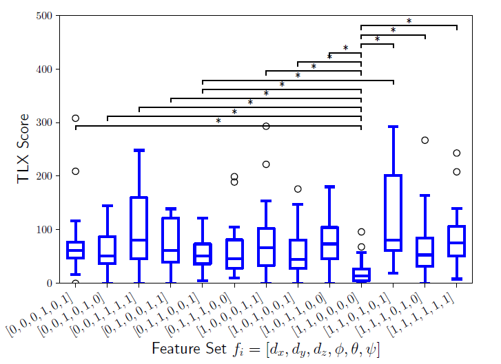

Task Characterization for Human-Robot Autonomy Allocation
 In human-robot teams, some tasks are easier than others to perform. This work sought to discover some of the underlying mechanisms that make completing some tasks more difficult than others. For this paper, we
had twenty people complete thirteen different grasphing tasks with a robot arm. Each person completed each task both with and without autonomous assistance to determine which features of robotic arm control -
rotations or translations about the x-y-z axes - are most difficult. We concluded that rotational features were the most difficult and would likely benefit most from autonomous interventions.
In human-robot teams, some tasks are easier than others to perform. This work sought to discover some of the underlying mechanisms that make completing some tasks more difficult than others. For this paper, we
had twenty people complete thirteen different grasphing tasks with a robot arm. Each person completed each task both with and without autonomous assistance to determine which features of robotic arm control -
rotations or translations about the x-y-z axes - are most difficult. We concluded that rotational features were the most difficult and would likely benefit most from autonomous interventions.
 For this project, I helped to refine the paper's scope and the experimental design necessary to characterize task-feature difficulty. Furthermore, I utilized an in-house potential fields library to implement the controller for the MICO 6-DOF robot arm; the controller was implemented using Python and ROS. I also worked closely with the lead author to collect the data for all twenty candidates. Finally, I wrote a section of the paper and contributed to the editing process.
Further Information
I worked on this project while I was a graduate student at Northwestern University working as a member of the argallab. The argallab seeks to apply robotics autonomy to assistive technology to improve the lives of the differently abled. This lab resides within the Shirley Ryan AbilityLab, the nation's perimer rehabilitaion hospital. This project resulted in a co-authorship on an ICRA 2019 conference article.
Skills and Tools Used
- Python, C++, ROS
- Design of Human Trials, IRB
- Robotic Arm Control
- Potential Fields
Awards
- NSF Graduate Research Fellowship
- US DOD National Defense Science and Engineering Graduate Fellowship